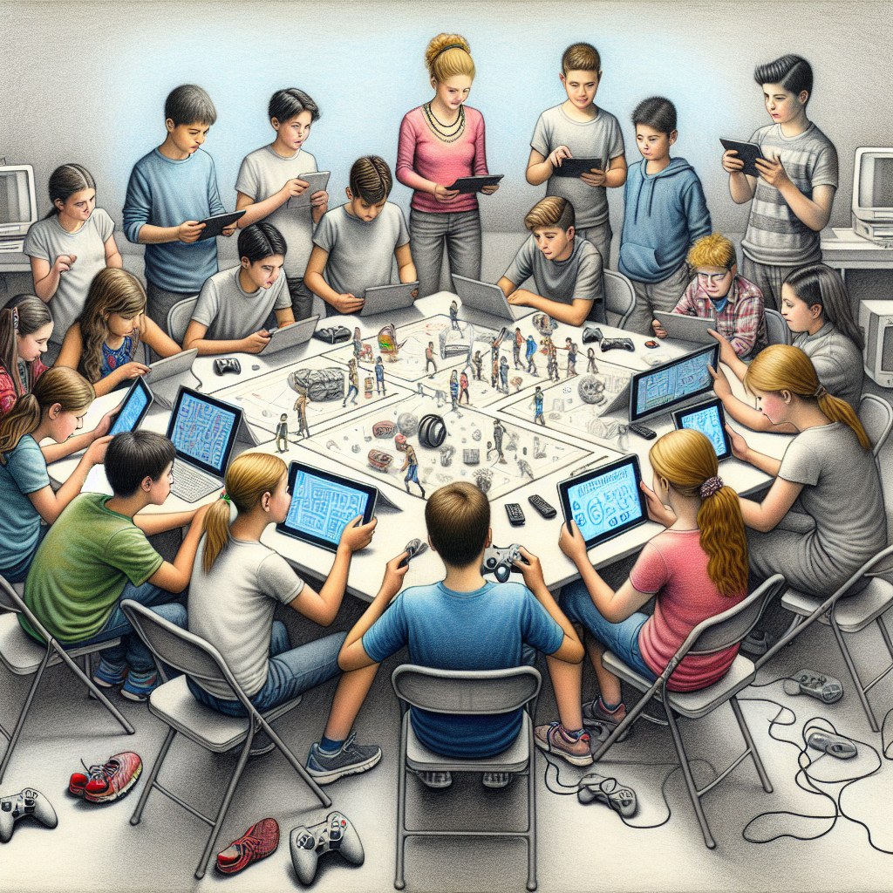

Mis aficiones y yo crecemos en proporcionalidad directa
La secuencia didáctica "Mis aficiones y yo crecemos en proporcionalidad directa" es una propuesta educativa para 1º de ESO de Matemáticas en la Comunidad de Madrid, diseñada para el aprendizaje de la proporcionalidad.
A lo largo de 7-8 sesiones, los estudiantes exploran este concepto fundamental a través de contextos que les apasionan: videojuegos, deporte y música, dotando de significado real a las relaciones matemáticas.
Está basada en los principios del Diseño Universal para el Aprendizaje (DUA) y el aprendizaje cooperativo. La secuencia promueve la inclusión, la autonomía y el desarrollo de habilidades sociales.
La estrategia de 'reuniones de expertos' permite a cada alumno dominar un método de proporcionalidad (reducción a la unidad, regla de tres o porcentajes) para luego enseñarlo a sus compañeros. Además, la integración de la Inteligencia Artificial (IA) en fases clave, fomenta el pensamiento crítico, la competencia digital y la creatividad. Los estudiantes culminan su aprendizaje con un producto cooperativo que aplica estos métodos a situaciones de su interés, demostrando una comprensión profunda y la capacidad de comunicar soluciones de forma innovadora.

He utilizado la plataforma AInara de Smile & Learn en la creación de los recursos que forman la secuencia didáctica, aprovechando sus herramientas para generar materiales accesibles, visuales y adaptados a diferentes niveles de comprensión. Esta plataforma ha permitido enriquecer las actividades, diversificar los formatos y ofrecer apoyos personalizados que facilitan la comprensión de los conceptos de proporcionalidad y su aplicación en contextos significativos para el alumnado.
Obra publicada con Licencia Creative Commons Reconocimiento No comercial Compartir igual 4.0